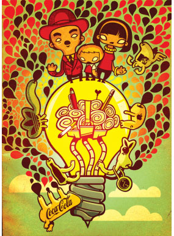
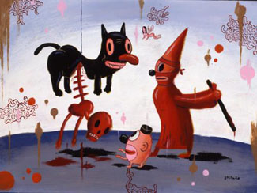
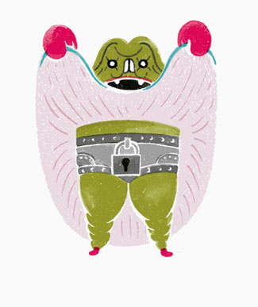

С ОФИЦИАЛЬНЫМ ВИЗИТОМ
Приехал Гери Бейзман
Конец сентября — начало октября выдались богатыми на важные поводы высунуть нос в оффлайн, которыми местный иллюстратор, прямо скажем, неизбалован.
Один, правда, уже позади — позавчера в клубе ДОМ состоялась долгожданная презентация открыток С-arts — и хотя такого рода открытые проекты традиционно интереснее для участвующих, чем для интересующихся поглядеть на чудеса иллюстрации, я Валере Гольникову и его команде снова кланяюсь в пол — большое полезное дело делаете. Жаль, что редко и долго, но станемте, коллеги, относиться с пониманием: подвижничество дело такое.

При этом выставка Тима Яржомбека на месте, кто еще не был, сходите — замечательная, по-моему, вещь.
Во-вторых — но тут пауза. Такого в наших краях еще не было. Полноценная звезда и легенда мировой иллюстрации собственной персоной, Папа поп-сюрреализма (не в смысле отец, в смысле понтифик, как у Эффеля) и король виниловых шалтай-болтаев, дисней андеграунда и растлитель молодежи Гери Бейзман вчера прилетел в Москву.

Я думаю, те, кто не в курсе, здесь не ходят, но все-таки, пара слов для справки. Бейзман — житель Лос-Анжелеса, Калифорния, давно уже стал галерейным художником всемирного значения и командует армией эпигонов. Им создан именно что собственный герметичный мир — звучит банально, он по-другому не скажешь — за новостями которого (более-менее однообразными, отметим) просвещенной публике уже лет двадцать никак не надоест следить. При этом, хотя по журналам он всегда рисовал все тех же лоботомированных котиков кишками наружу, то есть к иллюстрации в классическом значении слова отношение имеет довольно косвенное — при этом как-то так сложилось, что у многих и нас это имя возникает в голове первым, если заходит речь о современной иллюстрации. Короче, этот чрезвычайно крупный и важный для нас деятель современной культуры в среду 1го октября даст публичную лекцию в кинотеатре 35 ММ, а в субботу 4го — мастер-класс в Британской Школе дизайна (только для студентов, правда).
Это, пожалуй, тот случай, когда спросить у автора особенно нечего, но можно просто постоять рядом — будет потом что рассказывать внукам. Приходите
PS: Кстати, попался по случаю приятный эпигон.
